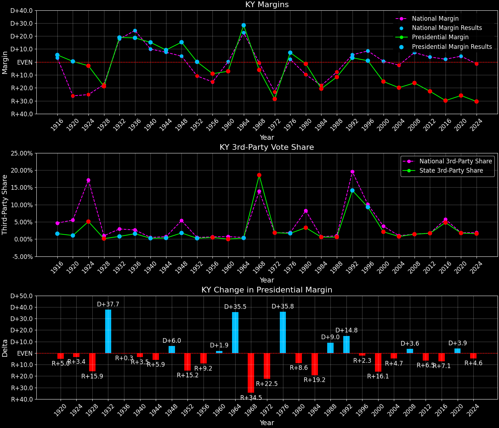

Kentucky (KY) — Statewide

Margins · 3rd-Party share · Pres. deltas

Relative margins · Relative 3rd-Party · Rel. deltas
Kentucky (KY) — Total Data
| Year | EVs | D | R | State Margin | Nat. Margin | Rel. Margin | Total votes |
|---|---|---|---|---|---|---|---|
| 1968 | 9 | 397,541(37.8%) | 462,411(43.9%) | R+6.2 | R+0.6 | R+5.6 | 1,053,050 |
| 1972 | 9 | 371,884(35.4%) | 678,262(64.6%) | R+29.2(Δ R+23.0) | R+23.5(Δ R+23.0) | R+5.6(Δ R+0.1) | 1,050,146 |
| 1976 | 9 | 615,323(53.7%) | 530,550(46.3%) | D+7.4(Δ D+36.6) | D+2.2(Δ D+25.7) | D+5.2(Δ D+10.8) | 1,145,873 |
| 1980 | 9 | 616,197(48.1%) | 634,861(49.5%) | R+1.5(Δ R+8.9) | R+9.9(Δ R+12.1) | D+8.4(Δ D+3.2) | 1,282,136 |
| 1984 | 9 | 536,640(39.7%) | 815,345(60.3%) | R+20.6(Δ R+19.2) | R+18.1(Δ R+8.2) | R+2.5(Δ R+10.9) | 1,351,985 |
| 1988 | 9 | 580,368(44.1%) | 734,281(55.9%) | R+11.7(Δ D+8.9) | R+7.7(Δ D+10.4) | R+4.0(Δ R+1.5) | 1,314,649 |
| 1992 | 8 | 665,104(44.8%) | 617,178(41.5%) | D+3.2(Δ D+14.9) | D+5.6(Δ D+13.3) | R+2.4(Δ D+1.6) | 1,486,226 |
| 1996 | 8 | 636,614(46.1%) | 623,283(45.2%) | D+1.0(Δ R+2.3) | D+8.6(Δ D+3.0) | R+7.6(Δ R+5.2) | 1,380,293 |
| 2000 | 8 | 638,923(41.4%) | 872,520(56.5%) | R+15.1(Δ R+16.1) | D+0.5(Δ R+8.0) | R+15.6(Δ R+8.1) | 1,544,026 |
| 2004 | 8 | 712,524(39.7%) | 1,069,161(59.6%) | R+19.9(Δ R+4.8) | R+2.5(Δ R+3.0) | R+17.4(Δ R+1.8) | 1,792,579 |
| 2008 | 8 | 751,985(41.2%) | 1,048,462(57.4%) | R+16.2(Δ D+3.7) | D+7.3(Δ D+9.7) | R+23.5(Δ R+6.1) | 1,826,508 |
| 2012 | 8 | 679,370(37.8%) | 1,087,189(60.5%) | R+22.7(Δ R+6.5) | D+3.9(Δ R+3.4) | R+26.6(Δ R+3.1) | 1,796,833 |
| 2016 | 8 | 628,854(32.7%) | 1,202,971(62.5%) | R+29.8(Δ R+7.2) | D+2.1(Δ R+1.8) | R+32.0(Δ R+5.4) | 1,923,398 |
| 2020 | 8 | 772,474(36.2%) | 1,326,646(62.1%) | R+25.9(Δ D+3.9) | D+4.4(Δ D+2.3) | R+30.4(Δ D+1.6) | 2,136,717 |
| 2024 | 8 | 704,043(33.9%) | 1,337,494(64.5%) | R+30.5(Δ R+4.6) | R+1.5(Δ R+6.0) | R+29.0(Δ D+1.4) | 2,074,530 |
Column explanations
- Δ
- Change (delta) in the value from the previous election year.
- Year
- Election year.
- EVs
- Number of electoral votes allocated to this state or unit.
- D
- Number of votes for the Democratic candidate (raw count(pct%)).
- R
- Number of votes for the Republican candidate (raw count(pct%)).
- State Margin
- Margin between the two major-party candidates, including third-party votes ((D - R)/total).
- Nat. Margin
- The national presidential margin for that year, including third-party votes ((D_total - R_total)/total_votes).
- Rel. Margin
- The presidential margin relative to the national presidential margin (Margin - Nat. Margin).
- Total votes
- Total voter turnout or ballots cast (when provided).
Kentucky (KY) — Third-Party Data
| Year | D | R | Other votes | State 3rd-Party Share | 3rd-Party Nat. Share | 3rd-Party Rel. Share |
|---|---|---|---|---|---|---|
| 1968 | 397,541(37.8%) | 462,411(43.9%) | 193,098(18.3%) | 18.34% | 13.59% | 4.75% |
| 1972 | 371,884(35.4%) | 678,262(64.6%) | 0(0.0%) | 0.00% | 0.09% | -0.09% |
| 1976 | 615,323(53.7%) | 530,550(46.3%) | 0(0.0%) | 0.00% | 0.33% | -0.33% |
| 1980 | 616,197(48.1%) | 634,861(49.5%) | 31,078(2.4%) | 2.42% | 6.98% | -4.55% |
| 1984 | 536,640(39.7%) | 815,345(60.3%) | 0(0.0%) | 0.00% | 0.12% | -0.12% |
| 1988 | 580,368(44.1%) | 734,281(55.9%) | 0(0.0%) | 0.00% | 0.21% | -0.21% |
| 1992 | 665,104(44.8%) | 617,178(41.5%) | 203,944(13.7%) | 13.72% | 19.23% | -5.51% |
| 1996 | 636,614(46.1%) | 623,283(45.2%) | 120,396(8.7%) | 8.72% | 9.68% | -0.96% |
| 2000 | 638,923(41.4%) | 872,520(56.5%) | 32,583(2.1%) | 2.11% | 3.65% | -1.54% |
| 2004 | 712,524(39.7%) | 1,069,161(59.6%) | 10,894(0.6%) | 0.61% | 0.84% | -0.23% |
| 2008 | 751,985(41.2%) | 1,048,462(57.4%) | 26,061(1.4%) | 1.43% | 1.38% | 0.05% |
| 2012 | 679,370(37.8%) | 1,087,189(60.5%) | 30,274(1.7%) | 1.68% | 1.62% | 0.06% |
| 2016 | 628,854(32.7%) | 1,202,971(62.5%) | 91,573(4.8%) | 4.76% | 5.54% | -0.77% |
| 2020 | 772,474(36.2%) | 1,326,646(62.1%) | 37,597(1.8%) | 1.76% | 1.84% | -0.08% |
| 2024 | 704,043(33.9%) | 1,337,494(64.5%) | 32,993(1.6%) | 1.59% | 1.88% | -0.29% |
Column explanations
- Year
- Election year.
- D
- Number of votes for the Democratic candidate (raw count(pct%)).
- R
- Number of votes for the Republican candidate (raw count(pct%)).
- Other votes
- Number of votes for third-party (other) candidates (raw count(pct%)).
- State 3rd-Party Share
- Share of the vote received by third-party (other) candidates.
- 3rd-Party Nat. Share
- The national third-party share for that year (3rd-Party votes / total votes).
- 3rd-Party Rel. Share
- Third-party share relative to the national third-party share (3rd-Party share - Nat. 3rd-Party share).

Two-party margins · relative · deltas
Kentucky (KY) — Two-Party Data
| Year | EVs | D | R | 2-Party Margin | 2-Party Nat. Margin | 2-Party Rel. Margin |
|---|---|---|---|---|---|---|
| 1968 | 9 | 397,541(46.2%) | 462,411(53.8%) | R+7.5 | R+0.7 | R+6.9 |
| 1972 | 9 | 371,884(35.4%) | 678,262(64.6%) | R+29.2(Δ R+21.6) | R+23.6(Δ R+22.9) | R+5.6(Δ D+1.3) |
| 1976 | 9 | 615,323(53.7%) | 530,550(46.3%) | D+7.4(Δ D+36.6) | D+2.2(Δ D+25.8) | D+5.2(Δ D+10.8) |
| 1980 | 9 | 616,197(49.3%) | 634,861(50.7%) | R+1.5(Δ R+8.9) | R+10.6(Δ R+12.8) | D+9.1(Δ D+4.0) |
| 1984 | 9 | 536,640(39.7%) | 815,345(60.3%) | R+20.6(Δ R+19.1) | R+18.1(Δ R+7.5) | R+2.5(Δ R+11.6) |
| 1988 | 9 | 580,368(44.1%) | 734,281(55.9%) | R+11.7(Δ D+8.9) | R+7.8(Δ D+10.4) | R+3.9(Δ R+1.5) |
| 1992 | 8 | 665,104(51.9%) | 617,178(48.1%) | D+3.7(Δ D+15.4) | D+6.9(Δ D+14.7) | R+3.2(Δ D+0.8) |
| 1996 | 8 | 636,614(50.5%) | 623,283(49.5%) | D+1.1(Δ R+2.7) | D+9.5(Δ D+2.6) | R+8.4(Δ R+5.2) |
| 2000 | 8 | 638,923(42.3%) | 872,520(57.7%) | R+15.5(Δ R+16.5) | D+0.5(Δ R+8.9) | R+16.0(Δ R+7.6) |
| 2004 | 8 | 712,524(40.0%) | 1,069,161(60.0%) | R+20.0(Δ R+4.6) | R+2.5(Δ R+3.0) | R+17.5(Δ R+1.5) |
| 2008 | 8 | 751,985(41.8%) | 1,048,462(58.2%) | R+16.5(Δ D+3.5) | D+7.4(Δ D+9.8) | R+23.8(Δ R+6.3) |
| 2012 | 8 | 679,370(38.5%) | 1,087,189(61.5%) | R+23.1(Δ R+6.6) | D+3.9(Δ R+3.4) | R+27.0(Δ R+3.2) |
| 2016 | 8 | 628,854(34.3%) | 1,202,971(65.7%) | R+31.3(Δ R+8.3) | D+2.2(Δ R+1.7) | R+33.6(Δ R+6.6) |
| 2020 | 8 | 772,474(36.8%) | 1,326,646(63.2%) | R+26.4(Δ D+4.9) | D+4.5(Δ D+2.3) | R+30.9(Δ D+2.6) |
| 2024 | 8 | 704,043(34.5%) | 1,337,494(65.5%) | R+31.0(Δ R+4.6) | R+1.6(Δ R+6.1) | R+29.5(Δ D+1.5) |
Column explanations
- Δ
- Change (delta) in the value from the previous election year.
- Year
- Election year.
- EVs
- Number of electoral votes allocated to this state or unit.
- D
- Number of votes for the Democratic candidate (raw count(pct%)).
- R
- Number of votes for the Republican candidate (raw count(pct%)).
- 2-Party Margin
- Margin between the two major-party candidates, ignoring third-party votes ((D - R)/(D + R)).
- 2-Party Nat. Margin
- The national presidential margin for that year, including third-party votes ((D_total - R_total)/total_votes).
- 2-Party Rel. Margin
- The presidential margin relative to the national presidential margin (Margin - Nat. Margin).